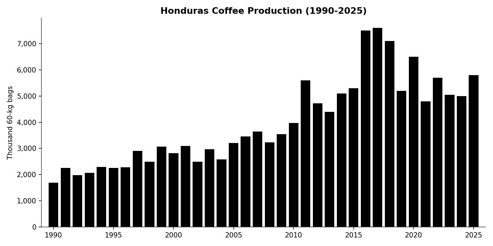
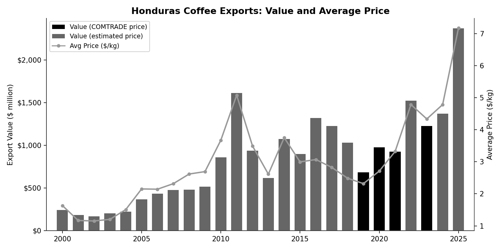
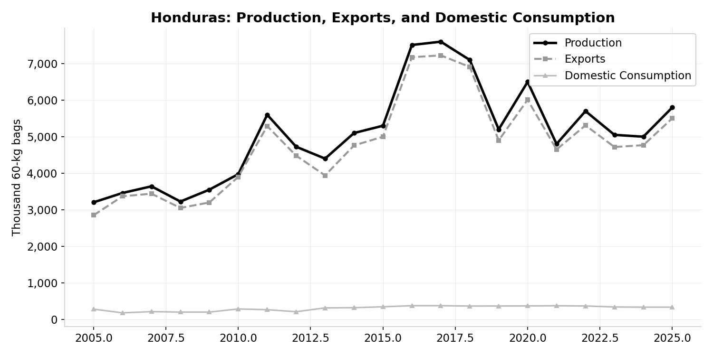
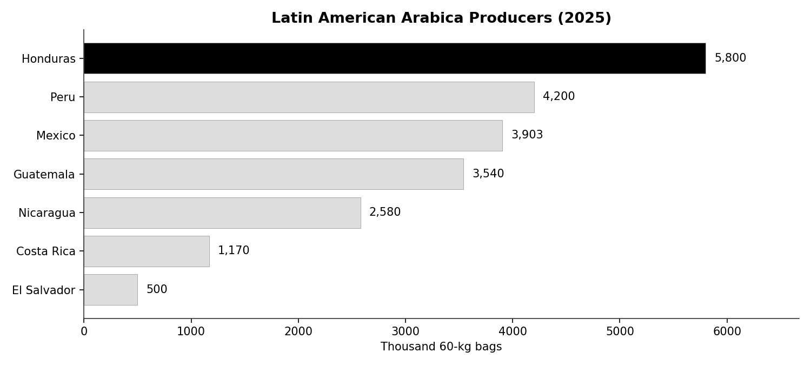
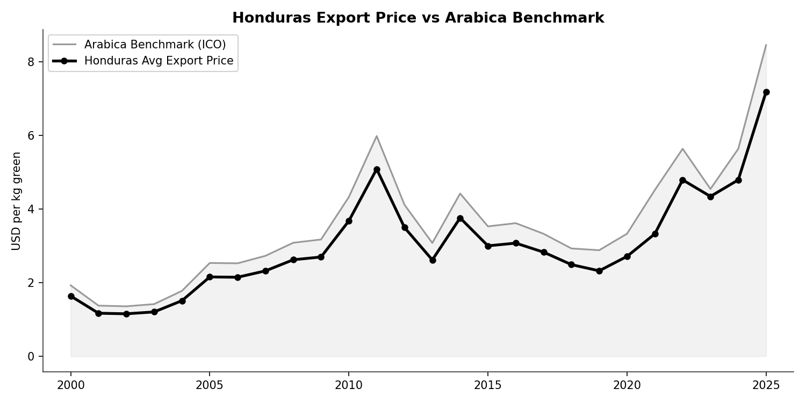
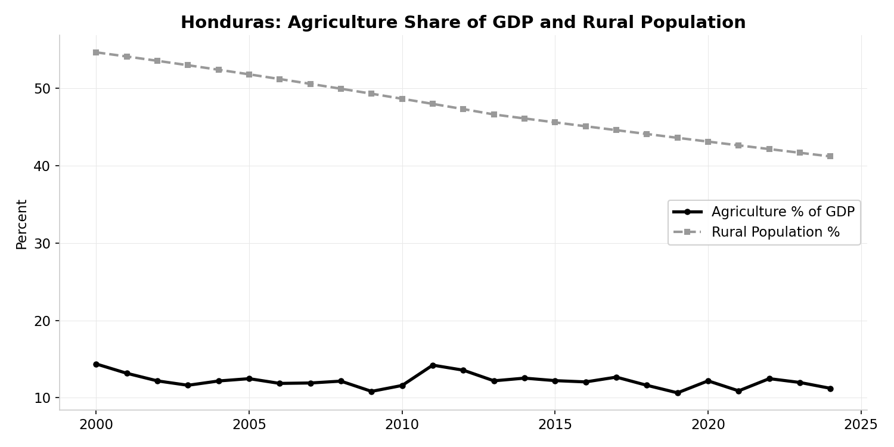

Honduras: Central America's Quiet Giant¶
Value Chain Analysis — Columbia SIPA

The Story¶
Honduras is not a country most people associate with coffee. It has no Juan Valdez, no Yirgacheffe, no global brand recognition. Yet Honduras is the largest coffee producer in Central America and the sixth-largest in the world. In 2017 it produced 7.6 million bags — more than Guatemala, Costa Rica, Nicaragua, El Salvador, Peru, and Mexico individually. Coffee is the country's most important agricultural export, and the sector employs an estimated 1 million people in a country of 11 million.
The growth was rapid and recent. In 1990, Honduras produced about 1.7 million bags. By 2017, it had more than quadrupled. The expansion was driven by smallholder farmers responding to favorable prices and government programs that encouraged coffee planting — particularly in the western highlands (Copán, Ocotepeque, Lempira) and the central corridor (Comayagua, La Paz). Unlike Vietnam's state-engineered boom, Honduras's growth was more organic: thousands of farmers individually deciding that coffee was a better bet than maize or beans.
Then the setbacks came in waves. Coffee leaf rust (la roya) hit Central America hard in 2012-2013, devastating yields across the region. Honduras lost an estimated 25% of its production capacity. Farmers replanted with rust-resistant varieties, and by 2016-2017 production had recovered to new highs. But in November 2020, Hurricanes Eta and Iota struck Honduras in rapid succession — two Category 4 storms within two weeks. The storms destroyed infrastructure, flooded farms, and displaced hundreds of thousands of people. Coffee production dropped from 6.5 million bags in 2020 to 4.8 million in 2021.
The recovery since has been uneven. Production has stabilized around 5-5.8 million bags — well below the 2017 peak. Whether Honduras can return to its pre-hurricane trajectory depends on continued replanting, input access, and whether global prices remain high enough to justify the investment.
Honduras's central tension is different from the other cases in this course. It is not about institutional design (Colombia), market structure (Vietnam), quality positioning (Rwanda), or traceability (Ethiopia). It is about resilience — how a smallholder-dominated, export-dependent coffee sector weathers the compounding shocks of climate change, disease, and natural disaster in one of the most vulnerable countries in the hemisphere.
The country has a GDP per capita of roughly $3,400 — lower than Guatemala, and less than half of Colombia's. Over 40% of the population is rural. Agriculture accounts for about 11% of GDP but a much larger share of rural employment. Coffee is not just an export commodity — it is a livelihood anchor for some of the poorest communities in the Western Hemisphere.
Map¶
Honduras's coffee value chain follows the typical Central American pattern: smallholder production, intermediary aggregation, and private export.
Actors:
~120,000 coffee farmers The vast majority cultivate small plots (1-5 hectares) in mountainous terrain at 1,000-1,500 meters altitude. Almost all production is Arabica — Honduras produces zero Robusta. Farms are family-operated, with hired labor during the harvest season (November-March). Most farmers sell cherry or wet parchment rather than processed green coffee.
Intermediaries and cooperatives A mix of private intermediaries (coyotes) and farmer cooperatives aggregate coffee from scattered smallholdings. Cooperatives have grown in importance — organizations like COMSA, COCAFCAL, and IHCAFE-affiliated groups operate wet mills and connect farmers to specialty buyers. But a significant share of volume still moves through private intermediaries, particularly in more remote areas.
IHCAFE (Instituto Hondureño del Café) The national coffee institute, funded by a levy on exports. Provides extension services, research, quality programs, and market information. Not a buyer or exporter — its role is enabling, similar to Colombia's FNC but with less market intervention.
Exporters A concentrated export sector. The largest exporters handle the majority of volume and connect Honduran coffee to the global market through the port of Puerto Cortés on the Caribbean coast.
Importers and roasters Honduras ships primarily to the US and Europe. The US is the single largest destination. Most Honduran coffee enters the commercial market (blends), though the specialty segment has grown significantly since 2010, particularly for western highland coffees.
Breakdown¶

Honduran farmers are estimated to receive approximately 80% of the export price — typical for Latin American origins with competitive intermediary markets.
At 2023 COMTRADE prices, Honduras's average export price was approximately $3.32/kg green. At an 80% farmer share, that implies a farmer price of roughly $2.66/kg green equivalent. With current Arabica prices far higher (the ICE "C" exceeded $3/lb or $6.60/kg in 2025), farmer prices have likely increased substantially — though rising input costs (fertilizer, labor) eat into margins.
Where the other 20% goes: - Intermediary/cooperative margin — aggregation, transport from remote hillside farms to the wet mill or dry mill - Processing costs — wet milling (de-pulping, fermentation, washing), dry milling (hulling, grading) - IHCAFE levy — funds sector-wide extension, research, and promotion - Transport to port — from the highlands to Puerto Cortés - Export preparation — quality control, documentation, container loading
Domestic consumption: Honduras consumes only about 335,000 bags per year — roughly 6% of production. Almost everything is exported. This makes the sector highly exposed to global price volatility with no domestic demand buffer.
Supply-demand balance:

The gap between the production line and the export line is narrow — Honduras exports nearly everything it produces. Stocks are minimal. Domestic consumption is flat and low. This is a pure export-oriented value chain.
Benchmark¶
Production: Central America's leader¶

Honduras produces 5,800 thousand bags (2025) — more than any Central American origin and more than Peru or Mexico. Among all global producers, Honduras ranks roughly 6th, behind Brazil, Vietnam, Colombia, Indonesia, and Ethiopia.
The production trajectory shows rapid growth from the late 1990s through 2017, a crash in 2019-2021 (la roya recovery + hurricanes), and a partial recovery since.
Prices: Tracking the benchmark¶

Honduras trades at or slightly below the Arabica benchmark — consistent with its position as a commercial-grade Arabica origin. The country does not command the premiums of Ethiopia or Kenya (specialty origins) or the volume discounts of Brazil (largest producer). Honduras coffee trades at roughly C +/- $0.05/lb — close to the benchmark with a small positive or negative differential depending on quality and market conditions.
The COMTRADE data shows Honduras's average export price tracking the global benchmark closely, with notable peaks in 2011 ($5.36/kg during the commodity super-cycle) and 2021 ($3.32/kg as prices began their current surge).
Yields¶
Honduras yields approximately 0.8 MT/ha of green coffee — mid-range among Arabica origins. For comparison: - Costa Rica: ~1.5 MT/ha (intensive management) - Colombia: ~1.0 MT/ha - Honduras: ~0.8 MT/ha - Rwanda: ~0.6 MT/ha - Ethiopia: <0.5 MT/ha
There is room for improvement through better agronomy, input use, and replanting with higher-yielding varieties. But Honduras's mountainous terrain limits mechanization, and many farms are in areas with limited road access.
Economic context¶

Agriculture's share of GDP has been remarkably stable at 11-12% over the past 25 years, even as the rural population has declined from 55% to 41%. This implies increasing agricultural productivity — fewer people producing the same share of output. But GDP per capita remains low ($3,426 in 2024), and the rural population that remains is disproportionately dependent on coffee.
Recommendations¶
| Recommendation | Impact | Feasibility | Position |
|---|---|---|---|
| Build climate resilience (rust-resistant varieties, shade management, diversification) | High | Medium | Top priority — existential for the sector |
| Improve yields through agronomy extension | High | High | High-return, proven interventions exist |
| Develop specialty market positioning for western highlands | Medium | Medium | Growing opportunity, some progress already |
| Strengthen cooperative infrastructure | Medium | Medium | Improves farmer bargaining power and quality |
| Expand domestic consumption | Low | Low | 6% domestic consumption, limited market |
| Transfer higher share of value to farmer | Low | N/A | Already at ~80% — not the binding constraint |
Climate resilience is the top priority. Honduras's position in the "hurricane belt" and its dependence on a single export crop make it uniquely vulnerable to compounding climate shocks. The 2020 hurricanes demonstrated that a decade of production growth can be wiped out in two weeks. Interventions include: replanting with rust-resistant and drought-tolerant varieties (already underway), shade-grown systems that reduce climate exposure, soil conservation on steep hillsides, and income diversification so that a bad coffee year doesn't mean a bad year for the household.
Yield improvement is the highest-return intervention. At 0.8 MT/ha, Honduras has significant room to grow. Costa Rica achieves nearly double the yield on similar terrain. Extension services (via IHCAFE), input access (particularly fertilizer, which many Honduran farmers underuse), and tree renovation (replacing old, low-yielding stock) are proven levers. The challenge is reaching 120,000 dispersed smallholders in remote highland areas.
Specialty positioning is an emerging opportunity. Honduran coffees from Copán, Santa Bárbara, and Marcala have begun earning recognition in specialty markets. The Cup of Excellence program in Honduras has produced lots scoring above 90 points. But the infrastructure for traceability, lot separation, and quality-consistent processing is still developing. Cooperatives are the natural vehicle for this — they can aggregate small lots, maintain traceability, and connect directly with specialty buyers.
Farmer share is not the binding constraint. At ~80% of the export price, Honduras's farmer share is typical for Latin America and well above Rwanda or Ethiopia. The problem is not that the chain captures too much value — it's that production is too vulnerable to external shocks and yields are too low.
Discussion Questions¶
-
Honduras's production quadrupled between 1990 and 2017, then dropped sharply due to hurricanes and disease. Is this a growth story or a vulnerability story? How should analysts weigh past growth against demonstrated fragility?
-
Honduras produces zero Robusta — 100% Arabica. Is this a strength (higher prices per kg) or a weakness (no diversification, single species vulnerability)? Should Honduras consider introducing Robusta, as some Central American researchers have proposed?
-
Compare Honduras's position to Colombia's. Both are Latin American Arabica producers with similar farmer shares (~80%). But Colombia has the FNC, while Honduras has IHCAFE. What are the practical differences in institutional capability, and what can Honduras learn from Colombia's experience — including its mistakes?
-
The 2020 hurricanes destroyed infrastructure and displaced populations beyond the coffee sector. When a natural disaster hits a coffee-dependent region, should value chain interventions focus narrowly on coffee recovery, or should they address the broader livelihood context? What are the tradeoffs?
-
Honduras's specialty coffee segment is growing but still small. Design a realistic strategy for increasing the share of Honduran coffee sold as specialty (currently <10% of volume). What infrastructure, institutions, and market relationships would need to be built? What can Honduras learn from Rwanda's quality-focused approach?
This case study is part of a series for the Value Chain Analysis course. See also: Vietnam, Rwanda, Colombia (archival), Ethiopia (archival). For the analytical framework, see the Skills Guides and Lecture Notes.